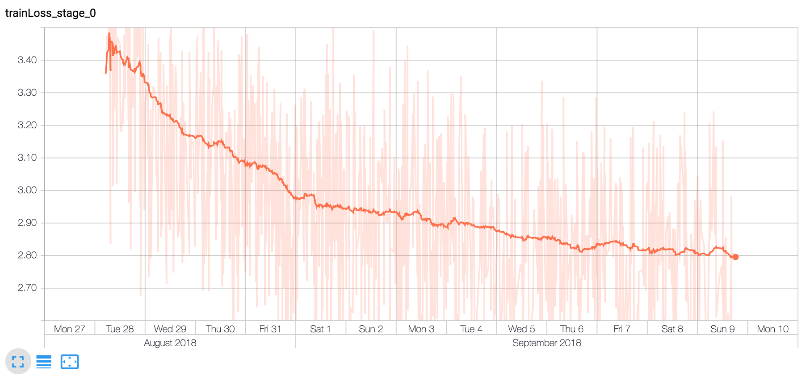

fastpose
We initiated fastpose to be an open source library that can perform a 2D/3D pose estimation in real time on a CPU.
Our requisites indicate that the estimation should be performed on a regular RGB stream for a small number of individuals.
With the help of deep learning, we hoped to provide a robust solution compatible with a large variety of situations to satisfy educational and entertainment purposes.
This chart show the respective time spent in each model for a single batch inference processed
over a CPU 2.7 GHz Intel Core i5 (Macbook pro 2015). The overall computation use bbox tracking
to further reduce the inference duration.
GET STARTED
1.- Install the dependencies :
Fast pose only requires few dependencies to be executed (tensorflow, pytorch, opencv, matplotlib and requets) and it's implemented under python 3.6.
The following commands can be used to build the necessary environment in conda :
conda create -n fastpose python=3.6
# The both following packages are non-gpu apis
conda install -c conda-forge tensorflow
conda install pytorch torchvision -c pytorch
# older version of opencv can lead to error (version 3.4.2)
conda install opencv
conda install matplotlib
conda install requests
2.- Download the project :
Download the project source code
and the parameter's archive
that embeds the exported graph in .pb (protograph) as well as the training tensorflow checkpoints.
When the download is completed, unzip the parameters in the project root's folder.
By default, the 2D inference is made with the tiny version, the medium version is not fully converged and its just a bit
more accurate than the tiny one while decreasing the speed by more than a factor 2. This is why, without any extra work,
the selected models do not have to be modified.
3.- Activate the environment
4.- Run fastpose
2D demo : Launch the pose estimator by running demo_2d.py in the root folder of the project :
2D/3D demo :
Fastpose also provides a tiny backend working on the loopback to allow better compatibility with other programming languages.
To use fastpose in localhost, start backend.py in the root folder of the project :
frontend_2d.py sends the image to the backend and display the visualization while frontend_3d.py is a 3D visualization made in html (D3)
that can display the 3D pose estimation performed over the video stream sent by frontend_2d.py.
From an external server :
If you need to run the backend script on an external server this unix command redirects the annotation stream
into your localhost ip on the port_frontend :
QUICK DIVE
1. Project architecture
system.interface.py :
Manages the annotation of new incoming frames by instantiating the required models.
system.object_detection.interface.py :
Model providing the bounding boxes surrounding every person depicted on a given image (Yolov2).
system.pose_2d.interface.py :
Model providing the 2d pose estimation from every designated people location.
system.pose_3d.interface.py :
Model providing the 3d pose estimation from a list of 2d poses.
training :
Package containing the jupyter notebook used to train the deep learning models.
utils :
Package containing the base classes required by the system.
2. Annotation's format
The following dictionary is returned by system.interface.predict function :
id : The person id
bbox : The subject's bounding box (utils.bbox.BBox)
pose_2d : The pose 2D (utils.pose.Pose2D)
pose_3d : The pose 3D (utils.pose.Pose3D)
confidence : The confidence for each 2d pose joints (same order as src.utils.PoseConfig.NAMES)
hash : The person hashcode
}
The following JSON is returned by system.interface.jsonify and by the backend script :
id : The person id
pose_2d : Dictionary of joint name => dictionary {x,y} (same joint names as src.utils.PoseConfig.NAMES)
pose_3d : The same structure as pose2d with the third dimension (in the subject coordinate)
confidence : The confidence for each 2d pose joints (same order as src.utils.PoseConfig.NAMES)
>
We select the percentage as measurement unit (instead of pixel's position) to simplify compatibility when the image is resized.
METHODOLOGY
The system is implemented in a top-down fashion, this is why an object detection algorithm is executed at first place
to find the location and the size of depicted human bodies.
The image is then cropped around the subjects and exported for a single pose inference. The pose 2d model is largely inspired from
Real-time Human Pose Estimation in the Browser with TensorFlow.js
, however, we decided to adopt a top-down approach and we decrease the input size of a custom mobilenet v1 to 144x144 using 50% of the parameters.
We finally recover the third dimension from the 2d pose by training a deep feedforward neural network on motion capture data feeding the model with the 2d joints
while trying to predict the depth in the subject coordinate. The object detection model is run in background every second to manage new incoming people
while a straightforward bounding box tracking is used to follow every persons depicted in scene.
The following charts illustrate the optimization loss on the last 14 days for the 2d pose regressor on a gtx 1080 ti.
The train loss is composed of a classification loss and a regression loss as explained in
this article
while the test loss computes the l2 distance between the prediction and the ground truth joint's positions.

FURTHER IMPROVEMENTS
1. The system runs the object detector model in background as long as the number of labeled persons has not reached the maximum threshold.
When the annotator temporarily lost a person, the system will put the person identifier in a pool of available id.
By modifying the data structure from a set to a stack, the identity tracking can be easily improved in all the cases where the maximum person threshold isn't reached.
By doing so, if a person detection is lost during k frames, the object detector will choose the right id in the pool by selecting the most recent lost id.
2. The object detector is only used to detect new incoming people. A lighter version on tensorflow with SSD instead of YOLOv2 could be implemented
to speedup, cleanup and remove one dependency in the project.
3. A model exploiting time series could be trained to further improve the accuracy of the 2d joints at almost no extra computational cost.
A jupiter notebook processing the posetrack dataset is provided as-is in the training directory.
REFERENCES
MobileNets: Efficient Convolutional Neural Networks for Mobile Vision Applications
A simple yet effective baseline for 3d human pose estimation
You Only Look Once: Unified, Real-Time Object Detection
Real-time Human Pose Estimation in the Browser with TensorFlow.js
Common Objects in Context
Fastpose parameters
Fastpose repository
Feel free to use, modify, distribute fastpose in personal or commercial projects (Apache License 2.0). Add me on linkedin if you want my master thesis or on github for any typo, installation's issues or bugs.

|